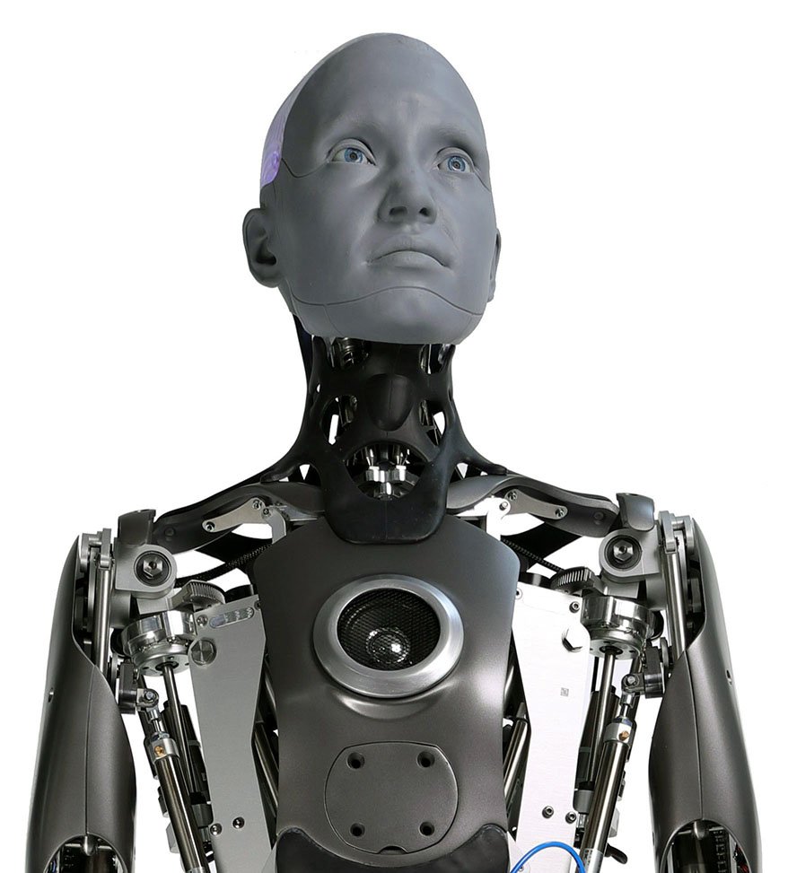

Взаимодействие с посетителями
Информационные и демонстрационные сценарии в общественных пространствах.
- Содержание диалога
- Интерфейсы и языки
- Условия эксплуатации
Подбираем гуманоидных роботов и оцениваем возможности их применения. Начинаем с конкретного сценария и возможностей выбранной модели.

Информационные и демонстрационные сценарии в общественных пространствах.
Платформы для изучения робототехники и разработки управляющего ПО.
Оценка выполнения выбранной операции на реальной площадке.
Гуманоидный форм-фактор сам по себе не гарантирует выполнение производственной задачи. Проверяем манипуляцию, мобильность, автономность и доступ к программному управлению для выбранной платформы.
До заказа согласуем модель, комплектацию, документацию, сроки поставки и объём интеграции. Установка, настройка и обслуживание могут быть включены в предложение.
Поможем выбрать роботизированную платформу, спроектировать автоматизацию или организовать сервис.
Для подбора решения расскажите о площадке, задачах и желаемом сроке запуска.